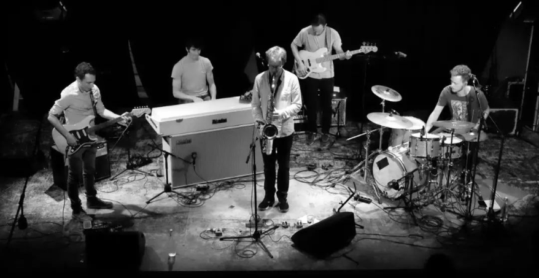

Festival de MOTIFS #2 au CCVA Villeurbanne (16/01/2026) à partir de 18:30 (buvette en continue)
2ème édition - 16 jan. 2026 à partir de 18:30
CCVA Villeurbanne

en cliquant ici!
Théâtre (début de la pièce 19:00)
"Le 26 mai 2013, à 20h21, un pilote de l armée allemande abat un avion de ligne détourné par un terroriste prêt à s’écraser sur le stade de foot de Munich. Il avait pourtant reçu l’ordre de ne pas tirer. Vous assistez ici à son procès. Avait-il le droit de sacrifier la vie de 164 passagers à bord de l’appareil pour sauver 70 000 spectateurs du stade? Criminel ou héros? À vous d’en décider… "
Les Mots Parleurs :Après s’être rencontrés dans les cours de théâtre proposés à la Manœuvre, six comédiens décident de créer en septembre 2024 leur propre troupe : les Mots Parleurs. Avec la pièce « Terreur », ils signent leur premier projet en autonomie, sous la direction de Jean-Loup Jamin.
N.B : l'accès au festival (buvette, photographies) est possible pendant la représentation, mais l'accès à la salle de spectacle sera fermée une fois la pièce commencée.
Concerts (2 groupes)
L'ÉQUIPAGE (Jazz-Rock) 21h15
 © W.S. 2022
Pour la sortie de leur nouveau disque (HERE WE ARE : https://records.ohmnibus.com/artistes/lequipage), L'ÉQUIPAGE vous proposera un échantillon de ce double album de 14 titres !
Combinant la liberté du jazz et l'énergie du rock sans perdre de vue l'importance de la mélodie, L'ÉQUIPAGE vous emmène à bord pour de grandes traversées aux atmosphères changeantes comme un ciel marin. Tantôt menaçant, tantôt serein mais toujours évocateur, le son puissant et généreux de ce quintet instrumental saura vous faire évoluer sans encombre à travers ses compositions structurées. L'ÉQUIPAGE s'est formé en 2019 à Villeurbanne (69100, France) au sein de l'atelier de musique de l'association MOTIFS.
Line up :
Saxophone : Alexandre Franchimont
Rhodes : Emmanuel Roux
Guitare : Thibaut Dallery
Basse : Laurent Deroche
Batterie : Thomas Fraissenon
Brass Tax (Jazz-Funk) 22h30
© M.J. 2024
Collectif lyonnais réuni autour de l'amour de la musique Funk et Jazz Fusion de toutes époques, Brass Tax délivre un répertoire groovy mêlant compositions originales et tubes intemporels. On vous rassure, l'écoute du groupe en live ne sera pas surtaxée.
Photographies (en continue et temps fort avec présentation de l'exposition par les photographes à 20:30)
Thomas Raisson
Thomas est ingénieur de formation et photographe par passion. Attiré par les textures, les contrastes et la matière, il a d’abord exploré la photographie à travers les paysages des hautes altitudes. Son regard s’est ensuite élargi vers les émotions des événements, l’intensité du sport et la spontanéité de la rue.
Plus récemment, il développe avec son amie Laetitia un projet de portraits vivants, réalisés en immersion chez des artisans rhodaniens, avec pour ambition de mettre en lumière les savoir-faire, les gestes et l’humanité qui les façonnent.
Lien vers blog « Portraits vivants » : https://linktr.ee/les_bellesames
PLUS d'INFORMATIONS à venir
Festival de MOTIFS - 16 jan. 2026 - CCVA Villeurbanne - à partir de 18h30
Réservez vos places directement ci-dessous :